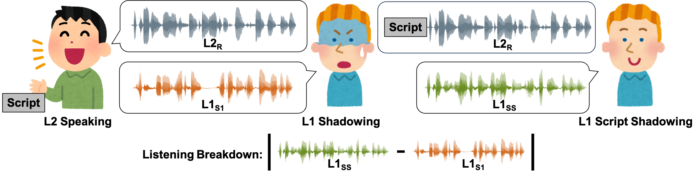

L2 speakers’ utterances are sometimes difficult to comprehend due to mispronunciation and improper prosody. In the Computer-Aided Pronunciation Training (CAPT) process, providing textual feedback on unexpected segments using word or phoneme-level recognition is not straightforward. Inspired by language teachers who correct students’ pronunciation through a voice-to-voice process, this study utilizes a unique semi-parallel dataset: combined with non-native (L2) speakers reading aloud utterances, native (L1) speakers’ shadowing and script shadowing utterances. We explore the possibility of replicating L1 shadowing of L2 using Voice Conversion (VC) techniques, creating a virtual shadower. Experimental results demonstrate the feasibility of the VC system in simulating L1’s shadowing behavior. The output of the virtual shadower system shows a high correlation with practical L1 shadowing utterances in both linguistic and acoustic aspects, such as Word Error Rate and Mel-Cepstral Distortion.

: THE CHILDREN WHO ARE THE SAME GENERATIONS ARE SUFFERING FROM HUNGER.
| Model | Source: L2 Reading | Target: L1 Shadowing (S1) | Target: L1 Script Shadowing (SS) |
|---|---|---|---|
| Source/Target | |||
| $$L2_{R}-L1_{S1}$$ | $$L2_{R}-L1_{SS}$$ | $$L1_{SS}-L1_{S1}$$ | VTN |
| AAS-VC |
: IT IS IMPORTANT TO IDENTIFY THE CORRECT SOURCE.
| Model | Source: L2 Reading | Target Shadowing (S1) | Target: Script Shadowing (SS) |
|---|---|---|---|
| Source/Target | |||
| $$L2_{R}-L1_{S1}$$ | $$L2_{R}-L1_{SS}$$ | $$L1_{SS}-L1_{S1}$$ | VTN |
| AAS-VC |